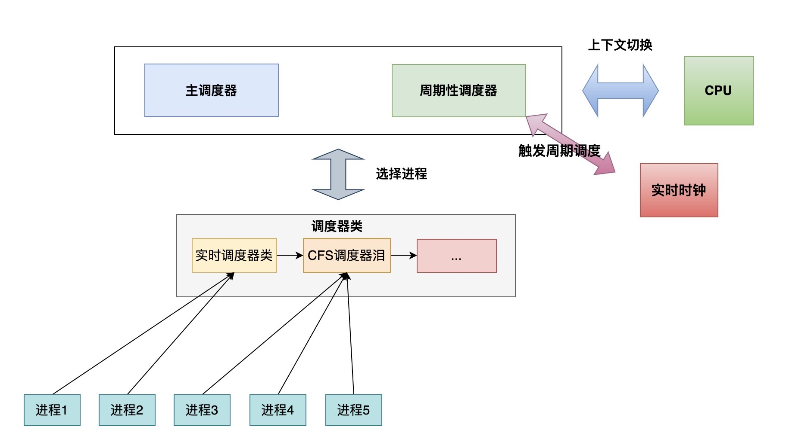
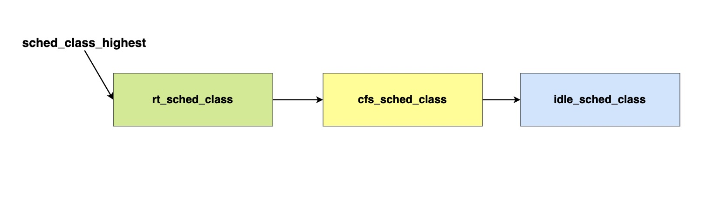
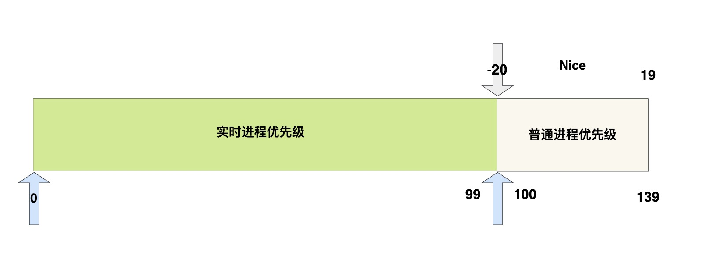

上一篇文章主要介绍了x86-32位平台下Linux2.6.24版本下进程的创建、执行、内核线程、退出几部分内容，本节主要介绍进程调度相关内容，主要包括：Linux2.6.24下调度器实现、内核抢占实现、进程切换细节、调度时机等。除非特别说明，本文源码均基于x86-32 Linux2.6.24，并且默认开启内核抢占；并且对于超出本节内容的部分：比如中断、异常等，不会进行深入介绍。
# 概念
在多道程序设计系统中，系统中可以同时运行多个程序，至少在用户看起来是这样的。但是实际上，系统上真正并行执行的进程数量最多等于系统的处理器数量(也就是我们常说的核心数量)，之所以在用户感知是大量程序并发执行，是因为操作系统负责把多个进程在处理器上轮流执行，又因为处理器的执行速度和我们人类感知速度不在一个量级上，这才给我们造成了一种多个程序并发执行的错觉。
在Linux内核中，内核跟踪了每个进程的描述符task_struct，并且通过若干结构与其他进程连接起来。调度器要做的事情就是：在程序之间共享CPU时间，创造并行执行的错觉。调度器功能主要有两个：
- 使用具体的调度策略选择合适的进程使用CPU
- 进行进程间的上下文切换
内核必须提供一种方法，在各个进程之间尽可能公平的共享CPU时间，而同时又要考虑不同任务的优先级。完成这样一种目的，有许多方法，各有利弊，这里不做争论，本文只对Linux2.6.24版本的调度策略进行介绍。
schedule()函数是Linux调度的起点，即进程调度的唯一入口，定义在kernel/sched.c中，是内核中最常见的代码之一。
Linux调度器的实现受到了一下若干因素的影响：
- 在所处理器系统上(SMP)，必须要注意几个细节，以避免调度器自相干扰
- 不仅实现了优先调度，还实现了Posix标准需要的其他两种软实时策略
- 使用goto语句以生成最优的汇编代码(对结构化程序设计的所有原理背道而驰，但是性能赞)
本节后面的介绍中将暂时忽略实时进程，只考虑完全公平调度器(在介绍源码实现时会对实时调度进行介绍)，2.6.24版本的Linux调度器一个杰出特性就是：它不需要时间片的概念，至少不需要传统的时间片。如果你对Linux2.6.11的O(1)调度器有所了解的话，相信你会非常喜爱2.6.24版本的调度器实现，相比于2.6.11各种启发式规则以及各种时间片概念计算，2.6.24将会显得非常清晰易懂，等后面我介绍完源码后，相信你一定会深有体会。传统的调度器对系统中的进程分别计算时间片，使进程运行直至时间片用尽，所有进程的时间片都已经用尽时了，则需要重新计算(为了简单描述，实际上对O(1)调度器做了非常非常大的简化，简化到甚至严格上来说是错误的，不过不用纠结，这不是本文的重点，本文重点是为了突出介绍CFS)。相比之下，当前版本的调度器只考虑进程的等待时间，即进程在就绪队列中已经等待了多长时间，对CPU时间需求最严格的进程被调度执行。
对于严格的CFS来说，应该是保证系统中的每个进程都被公平的对待(CFS的理论概念这里就不赘述了，不影响我们理解Linux的实现，一点儿也不)，但是由于一些现实因素的影响，Linux没有采用这种思想：
- 进程的不同优先级必须得到考虑，更加重要的进程必须比相对次要的进程获得更多的CPU时间
- 进程不能切换得太频繁，因为上下文切换(从一个进程切换到另一个进程)，是有一定开销的。在切换太频繁时，过多时间花费在进程切换过程中，而不是用于实际工作。
- 两次相邻的任务切换间，时间也不能太长，否则会积累较大的不公平(其他进程等待太久)，对于多媒体系统来说，进程运行时间太长会导致延迟增大
另外，如果编译Linux内核时激活了调度器统计，那么会在运行时生成/proc/sched_debug，其中包含了调度器当前状态所有方面的信息。
调度时机
在Linux内核实现中，通常会在什么时候选择执行进程调度呢，换句话说，Linux的调度时机有哪些呢？主要有以下几种：
- 进程状态转换时刻：进程终止、进程睡眠。例如：进程执行sleep或exit时，会显式调用schedule()
- 周期性调度器检查到当前进程运行时间超出限制(时钟中断出发)，后面会说到周期性调度器
- 设备驱动程序执行长而重复的工作时，每次循环都检查是否需要进行调度，如果需要则调用schedule()
- 从
中断、异常、系统调用返回，检查进程标志(后面会介绍)来判断是否需要调度，如果需要则调用schedule()
内核实现
在Linux内核中，内核跟踪了每个进程的描述符task_struct，并且通过若干结构与其他进程连接起来。调度器要做的事情就是：在程序之间共享CPU时间，创造并行执行的错觉。调度器功能主要有两个：
- 使用具体的调度策略选择合适的进程使用CPU
- 进行进程间的上下文切换
数据结构
调度器使用一系列数据结构，来排序和管理系统中的进程。调度器的工作方式与这些结构的设计密切相关。几个组件在许多方面彼此交互。如图所示：

可以看到，图中清晰的描述了各个组件之间的交互：
- 无论是主调度器还是周期性调度器，都通过具体的调度器类来选择合适的进程
- 调度器选择进程后，需要执行进程间切换，此时需要借助CPU帮助
- 周期性调度器被时钟中断触发执行(实际上时钟中断会触发CPU执行特定的中断处理程序，因此还是和CPU交互)
- 系统中的进程同一时刻只能属于一个调度器类
在后面的介绍中，除非特别说明，否则我将核心调度器和周期性调度器统称为通用调度器。正如上面说的，每个进程都刚好属于某个调度器类，各个调度器类负责管理所属的进程，而通用调度器自身完全不涉及进程管理，其工作完全委托给调度器类。如果你学习过一门面向对象语言，那么可以这么理解：所有的调度器类可以理解为实现了特定接口的实现类，而通用调度器只需要调用接口方法实现特定的工作，而实际上不需要知道具体是什么调度器类；另外，不同调度器类之间也不需要相互交互。
task_struct中调度相关字段
进程的task_struct中有一些字段和调度相关，主要如下：
1 | struct task_struct { |
优先级
前面就有提到过，并非系统上所有的进程都同样重要(氪金玩家当然更重要.-.)。不那么紧急的进程不需要太多的关注，而重要的工作应该尽可能快速完成。为了确定特定进程的重要性，Linux给进程增加了相对优先级属性。Linux采用了3个成员来表示进程的优先级。
静态优先级(static_prio)：进程启动时分配的优先级，可以使用nice和sched_setscheduler系统调用修改，否则在进程运行时保持不变。普通优先级(normal_prio)：基于进程静态优先级和调度策略计算出的优先级。因此如果普通进程和实时进程具有相同的静态优先级，它们的调度策略不同，所以计算而来的普通优先级也不同动态优先级(prio)：在某些情况下，内核需要暂时提高进程的优先级(内核同步的实时互斥量可能会提高动态优先级从而使得优先级较低的进程先运行，不是本文重点，忽略之)，因此需要新增一个优先级，也就是动态优先级来表示。由于此改变不是永久的，因此静态优先级和普通优先级不受影响。
实时优先级
rt_priority标识实时进程的优先级。该值不会代替先前讨论的那些值。最高实时优先级为0，最低实时优先级为99。值越大，优先级越低
调度类
sched_class表示进程所属的调度类，参考上面的图，可以发现每个进程属于且仅属于一个调度类
调度实体
Linux该版本开始，调度器不限于调度进程，还可以调度更大的实体。这样的特点可以方便实现组调度：可用的CPU时间可以首先在一般的进程组(比如所有进程可以简单的按照用户分组)之间分配，然后把进程组分配到的时间再在进程之间分配。
要实现这样的目标，就要求调度器不直接操作进程，而是处理可调度实体。一个实体由sched_entity表示。最简单的情况下，调度器调度各个进程，由于调度器只能调度调度实体，因此Linux在task_struct中内嵌了sched_entity结构，使得task_struct也成为了一个调度实体
调度策略
policy保存了对该进程应用的调度策略，Linux目前支持5个可能的值
SCHED_NORMAL用于普通进程，我们后面也是主要讲述此类进程。它们通过完全公平调度器来处理。另外SCHED_BATCH和SCHED_IDLE也通过完全公平调度器来处理，不过可以用于次要的进程。SCHED_BATCH用于非交互，CPU使用密集的批处理进程。调度决策对此类进程给予冷处理：他们绝不会抢占CFS调度器的另一个进程，因此绝不会干扰交互式进程。如果不使用nice降低进程的静态优先级，同时又不希望该进程影响系统的交互性，此时最适合使用该调度器类。SCHED_IDLE进程重要性最低，因为其相对权重是最小的(后面介绍权重计算时会说)。SCHED_IDLE一般是IDLE进程，在系统中没有课可运行进程时，会调度IDLE进程运行SCHED_RR和SCHED_FIFO用于实现软实时进程。其中SCHED_RR实现了一种循环方法，而SCHED_FIFO则使用先进先出机制。这两类策略不是由完全公平调度器类处理，而是有实时调度器类处理，后面也会介绍这些调度器实现。
CPU控制位
cpu_allows是一个位域，在多处理器上使用，用来限制进程可以在哪些CPU上执行
循环调度器相关
run_list和time_slice是循环实时调度器所需要的，CFS并不需要这两个字段。其中run_list是一个表头，用于维护包含各进程的一个运行表，而time_slice则指定进程可使用CPU的剩余时间段
辅助函数/标志
辅助标志
对于Linux调度器来说，有一个非常重要的标志就是TIF_NEED_RESCHED标志。如果对活动进程设置了该标志，那么调度器即知道CPU将从该进程回收并赋予新进程。
辅助函数
rt_policy()：用于判断给定的调度策略是否属于实时类1
2
3
4
5
6
7static inline int rt_policy(int policy)
{
// 如果是实时策略，返回true
if (unlikely(policy == SCHED_FIFO) || unlikely(policy == SCHED_RR))
return 1;
return 0;
}task_has_rt_policy：用于判断给定进程是否采用实时调度策略，只是对上面的函数做了简单的包装1
2
3
4static inline int task_has_rt_policy(struct task_struct *p)
{
return rt_policy(p->policy);
}rt_prio：判断给定优先级是否属于实时优先级，这和进程的调度策略无关，只是单纯的根据优先级的数值判断1
2
3
4
5
6
7
8MAX_RT_PRIO = 100
static inline int rt_prio(int prio)
{
if (unlikely(prio < MAX_RT_PRIO))
return 1;
return 0;
}
真正的辅助函数远不止这些，但是没关系，后面用到具体的函数之前，我会先介绍函数的作用，必要时会附带源码介绍。
调度器类
调度器类提供了通用调度器和各个调度器方法之间的关联。调度器类由特定数据结构中汇集的几个函数指针表示。通用调度器请求的各个操作都可以由一个指针表示，这种面向对象的设计使得通用调度器无需了解各个调度器类的内部实现(就像前面说的那样)。
我们暂时不考虑针对多处理器的扩展，调度器类结构如下所示
1 | struct sched_class { |
对于各个调度器类，都必须提供sched_class的一个实。并且调度器类之间的层次结构是平坦的：实时进程最重要，完全公平进程其次，而IDLE进程只有在CPU无事可做时才会被调度执行，sched_class.next字段将不同的调度器类按照顺序连接起来，因此在选择合适进程执行时，会先在实时进程的队列中寻找，如果实时进程队列中没有合适的进程，然后才会去CFS就绪队列中寻找，以此类推。
上面这句话可能不太好理解，下面通过源码和一张图来帮助理解调度器类之间的关系
1 |
|
调度器之间的关系如图所示

然后schedule()函数在选择下一个占用CPU的进程时，会按照这个顺序搜寻，因此最先查看实时调度器类队列中有没有可运行进程，然后才是cfs调度器，最后才是idle调度器。
enqueue_task：向调度器队列提供一个新进程。在进程从睡眠状态变为可运行状态时，会发生该操作。dequeue_task：将进程从调度器队列中移除。进程从可运行状态变成不可运行状态时，就会发生该操作。当然，内核有可能因为其他原因将进程从调度器队列中去除，例如：进程的优先级改变，从CFS进程变成了实时进程，那么就需要把进程从CFS调度器的队列中移除，并且添加到实时调度器队列中。另外需要注意的是，这里虽然说的是调度器队列，但是调度器不一定使用队列的方式来管理进程，比如CFS调度器就是用红黑树来管理进程；因此这里说的队列是一种抽象的说法。yield_task：进程自愿放弃对处理器控制权时，可以使用sched_yield系统调用，此时内核将会调用进程所属调度器类的yield_task方法。check_preempt_curr：用一个新唤醒的进程来抢占当前进程。例如do_fork中创建新进程后会调用wake_up_new_task唤醒新进程，该函数那不可能会调用此函数pick_next_task用于选择下一个将要运行的进程，而put_prev_task则在用另外一个进程代替当前运行进程之前调用。set_curr_task在进程调度策略发生变化时调用task_tick在每次激活周期性调度器时，由周期性调度器调用new_task用于建立fork系统调用和调度器之间的关联，每次新进程建立后会调用new_task通知调度器
以上各个函数后面会一一介绍其源码。
就绪队列
通用调度器用于管理活动进程的主要数据结构之一就是就绪队列。注意要和上面说的调度器类队列区分开来，调度器类队列是每个调度器类各自管理的队列。而就绪队列则是属于CPU的，每个CPU都有自身的就绪队列，每个活动进程，只能出现在一个就绪队列中(言语表达比较会比较难以说清楚，稍后会通过一张图来表明两者的区别)。
就绪队列是通用调度器许多操作的起点，但是要注意的是：进程并不是由就绪队列成员直接管理的，进程管理是各个调度器类的职责，因此在各个就绪队列中嵌入了特定于调度器类的子就绪队列。CPU就绪队列数据结构如下所示：
1 | struct rq { |
需要说明的是，为了简单起见，上面的rq结构省略了很多统计相关的字段和其它若干字段。
nr_running：记录了当前队列上可运行进程的数目，不考虑其优先级和调度类load：提供了就绪队列当前负荷的度量。队列负荷本质上与队列上当前活动进程数目成正比。其中各个进程又有优先级的作为权重。每个就绪队列的虚拟时钟速度就是基于这些信息。后面会详细介绍cpu_load：用于跟踪当前cpu负荷状态，多cpu间负载均衡会使用cfs：嵌入的属于cfs调度器类的调度器队列rt：嵌入的属于实时调度器类的调度器队列curr：指向当前运行进程的task_struct实例idle：指向idle进程的task_struct实例，在没有其他可运行进程时执行clock和prev_clock_raw用于实现就绪队列自身的时钟。每次调用周期性调度器时，都会更新clock的值。另外内核还提供了标准函数updata_rq_clock，可在操作调度器队列的调度器中多处使用。
系统中所有就绪队列都在runqueues数组中，该数组每个元素分别对应于系统中的一个cpu。在单处理器系统中，由于只有一个cpu，因此数组只有一个元素。
1 | static DEFINE_PER_CPU_SHARED_ALIGNED(struct rq, runqueues); |
辅助函数
内核定义了一些就绪队列相关的宏
1 | // 找到指定cpu对应的rq |
调度实体
前面说过，当前版本的Linux能够调度实体，而进程也是通过内嵌调度实体的方式才能被调度器调度，下面就看一下调度实体数据结构定义：
1 | struct sched_entity { |
load：当前调度实体的权重，决定了调度器中各个实体占队列总负荷的比例。计算负荷权重是调度器的一项重任，因此CFS调度器所需要的虚拟时钟速度最终依赖于负荷，后面会详细介绍run_node：树节点，使得调度实体可以以红黑树的方式进行组织on_rq：表示该实体当前是否就在就绪队列上接受调度time相关：进程运行时，我们需要记录消耗的CPU时间，以用于完全公平调度器。sum_exec_runtime即用于该目的。跟踪运行时间是由updata_curr不断积累完成的。每次调用时，会计算当前时间和exec_start之间的差值，同时更新exec_start为当前时间。差值责备添加到sum_exec_runtime中vruntime：在进程执行期间虚拟时钟上流逝的时间数量由vruntime记载prev_sum_exec_runtime：在进程被撤销CPU时，会将sum_exec_runtime保存到prev_sum_exec_runtime中。周期性调度器会根据sum_exec_runtime-prev_sum_exec_runtime差值来判断当前进程是否已经占用CPU过久，如果超过某个限制，则强制进行进程切换。
优先级处理
从用户的角度来看，优先级非常简单，只是某个范围内的数字而已。但实际上，内核对优先级的处理远不止这么简单，相反，处理优先级还是比较复杂的。
优先级内核表示
在用户空间可以通过nice调用设置进程的静态优先级，进程的nice值在[-2019]之间。nice值越低，表明优先级越高。内核使用一个简单的数值范围，从[0139]来表示内部优先级。优先级和数值关系相反，如图所示：

Linux提供了一些宏用于在不同表示形式之间转换
1 | // 普通进程最小优先级数值 |
计算优先级
Linux有三种优先级，分别是静态优先级、普通优先级、动态优先级，那么他们是如何计算的呢？static_prio是计算的起点，另外两种优先级都可以通过该优先级计算出来：
1 | // 该函数同时修改了normal_prio和prio |
不知道你有没有发现，在efficative_prio中检测实时进程是基于优先级数值，而不是基于进程的调度策略，这是为什么呢？这样做对于临时提高至实时优先级的非实时进程(在使用实时互斥量时)来说，是必要的。
进程分支出子进程时，子进程的静态优先级和普通优先级继承自父进程，子进程的动态优先级设置为父进程的普通优先级，这是为了防止父进程临时提高的实时优先级泄露给子进程。
优先级作用
Linux为什么要设置三种优先级呢？三种优先级又各有什么作用呢？下面就来详细说一下，首先需要认识到一点，我们所说的实时优先级数值和非实时优先级数值(即0-99和100-139)，统统指的是prio，也就是动态优先级。因此下面如果不做特别说明，那么优先级指的就是动态优先级。
静态优先级：该优先级可以通过nice设置，主要用于CFS调度器调度的非实时进程，此类进程的权重就是通过静态优先级计算得出来的，而对于实时优先级进程，并没有用到静态优先级。动态优先级：动态优先级表示进程当前是实时进程还是非实时进程(prio < 100则说明进程当前是实时进程，否则是非实时进程)，该类优先级只对实时进程有用，而对于非实时进程，它们被CFS调度器调度，他们具体的优先程度取决于他们的权重，也就是间接的取决于静态优先级普通优先级：说到这里你可能会疑惑，前面两个静态优先级和动态优先级一个影响非实时进程，一个影响实时进程，那么为什么还需要普通优先级呢？如果仅是这样，确实是不需要普通优先级。但是问题在于，Linux有时候需要将非进程优先级短暂的提高到实时优先级，而这个提高并不是长久的，因此需要额外用一个普通优先级来表示。实时优先级：实时优先级(rt_priority)，只会影响实时进程的普通优先级计算，从而进一步影响到动态优先级，非实时进程并不会用到这一优先级。
对于非实时优先级，它并不考虑实时优先级，它的另外三种优先级总是想等，即总是等于静态优先级。
而对于实时进程，它并不考虑静态优先级，它的普通优先级为MAX_RT_PRIO-1 - p->rt_priority，即受到rt_priority的影响；而动态优先级，在创建时继承自父进程的普通优先级，当然也可以通过sched_setscheduler设置。该函数会修改实时优先级。如果sched_setscheduler希望将进程修改为实时进程，那么在同时也会修改静态优先级和动态优先级，如果希望将进程修改为普通进程，那么会将进程除了实时优先级之外的三种优先级都设置为静态优先级，而刚刚也说了，普通进程不使用实时优先级(set_scheduler做的工作当然不止这些，但是只需要涉及到优先级部分就够了)。
计算权重负荷
前面说了，普通进程依赖静态优先级计算权重，权重对于CFS调度器来说非常重要，而对于实时进程来说，虽然也会计算权重，但是实际上实时调度器在调度实时进程时根本不会用到。因此下面介绍的权重负荷，实际上是针对CFS调度器调度的非实时进程。
需要注意的是，对于普通进程，创建时静态优先级是继承自父进程的，因此它的权重也和父进程一样，因此可以直接从父进程拷贝就好，不需要做改变。只有在静态优先级改变(比如nice系统调用)时，才需要对权重进行相应的修改。进程的权重保存在task_struct.se.load字段中，该字段是load_weight类型：
1 | struct load_weight { |
weight: 表示权重inv_weight: 标识被负荷权重除的结果，什么意思呢？这里都是用了普通的long类型，因此内核是无法直接存储1/weight的，而比需要借助乘法和移位来完成，所以就保存了inv_weight，inv_weight = 2^32 / weight。具体如何实现的这里就不展开了。
Linux是这样设计的：进程每降低一个nice值，则多获得10%的CPU时间，相反的每升高一个nice值，则放弃10%的时间。为了实现这样的设计策略，内核将优先级转换为权重值，转换表如下：
1 | static const int prio_to_weight[40] = { |
对内核使用的[039]范围中的每个nice(对应用户设置的[-2019])，该数组都有一个对应项。各数组之间的乘数因子是1.25。为什么采用1.25这个因子呢？我们举个例子说明一下：假设进程A和B的nice值都是0，那么两个进程的权重都是1024，并且两个进程占用的CPU份额相等，各50%。即(1024+1024) / 1024 = 0.5。
如果进程B的nice增加1，那么B的CPU份额就需要减少10%，也就是说A得到CPU份额的55%，而B得到45%，这样的话就需要B的权重为1024 / 0.55 - 1024 = 820。此时B的CPU份额就是820 / (820 + 1024) = 0.45，因此乘数因子就应该是1024 / 820 = 1.25。
在执行静态优先级优先级到权重的转换时，也需要转换实时进程，虽然并没有用到(至少2.6.24没有用到)，内核通过set_load_weight进行静态优先级到权重的转换:
1 | static void set_load_weight(struct task_struct *p) |
如果你还有印象的话，就会发现属于每CPU的就绪队列中也关联到一个负荷权重。每次进程被添加到就绪队列中时，内核就会调用inc_nr_running函数，该函数增加就绪队列进程数以及就绪队列的权重
1 | static void inc_nr_running(struct task_struct *p, struct rq *rq) |
通用调度器
调度器的实现基于两个函数：周期性调度器和主调度器。这些函数根据进程的优先级分配CPU时间。下面将分别对周期性调度器和主调度器进行介绍
周期性调度器
周期性调度器由scheduler_tick实现。如果系统正在活动中，那么内核会按照频率HZ自动调用该函数(时钟中断)。如果没有进程在等待调度，那么在计算机电量不足的情况下，也可以关闭该调度器以减少耗电。该函数主要有两个任务
- 管理内核中与整个系统和各个进程的调度相关的统计量，主要是对各种计数器加1
- 激活负责当前进程的调度器类的周期性调度方法
1 | void scheduler_tick(void) |
可以看到周期性调度器在时钟中断的触发下周期性执行，每次执行都会更新当前cpu就绪队列的时钟，当前cpu负载，然后调用当前进程所属的调度器类的周期性调度方法，(另外多说一句，多处理器下每个处理器都有自己的周期性时钟)。对于调度器类的周期性方法这里暂时不讨论，在后面的章节会着重介绍。
主调度器
在内核的许多地方，如果要讲CPU分配给与当前进程不同的另外一个进程，都会直接调用主调度器函数schedule()，在从系统调用返回之后(实际上不止于此，从中断、异常返回时也会检查)，内核也会检查当前进程是否设置了TIF_NEED_RESCHED，如果设置了该标志，那么就会调用scheduler()函数寻找一个新的可执行进程替换当前进程。下面就来着重看一下schedule()函数的内核实现：
1 | asmlinkage void __sched schedule(void) |
可以看到，当前进程如果是因为被抢占而导致失去CPU，那么不会把当前进程从就绪队列中移除，而如果是主动让的CPU，说明此时进程正在某等待队列上等待指定条件，那么会将当前进程从就绪队列中删除
schedule函数主要工作为：调用当前进程所属调度器类方法put_prev_task，该方法不同的调度器类实现不同，主要工作就是在当前进程失去cpu之前做一些工作(例如对于CFS调度器，如果当前进程的on_rq==1，则会将当前进程重新放回队列中)；然后调用pick_next_task函数获取下一个合适的进程，该函数主要去调用调度器队列的相应函数，如果成功找到了合适的进程，并且和当前进程不相同，那么后面会执行context_switch进行实际的切换。
需要注意的是，如果进程的on_rq==1，那么表明当前进程属于某个队列管理，即使它目前不在该队列上。比如CFS调度器来说，在选择新的进程执行时，会把当前进程从CFS管理的红黑树上移除，也就是说正在运行的CFS调度器管理的进程实际上并不在队列中，但是该进程的on_rq=1。这里需要区分，on_rq表示一个进程是否属正在被某个调度器队列管理，这个管理由两层含义：
- 该进程正在调度器队列中
- 该进程不在调度器队列中，但是正在使用CPU
因此对于CFS调度器来说，如果进程在调度器队列中，那么on_rq=1恒成立，反过来却不然；因为被调度器选中占用CPU的进程虽然不在调度器队列中，但是它仍然属于调度器队列管理，因此on_rq=1。
下面将依次介绍pick_next_task 和context_switch函数，首先介绍pick_next_task函数
1 | static inline struct task_struct * |
可以看到，在选择合适进程时，实际上是先遍历sched_class_highest链表，中的调度器类，然后调用指定调度器类的pick_next_task函数选择合适的进程，而sched_class_highest链表中调度器类的数量就决定了调度器类的优先级，根据前面说的rt_sched>cfs>idle
选择合适进程的逻辑其实非常简单，就是找到合适的调度器类，然后调用调度器类的方法从调度器队列中寻找合适的进程，下面我们来看看schedule函数的另一个重点，进程切换函数context_switch：
1 | static inline void |
同样的，该函数有两个重要部分，分别是switch_to和finish_task_switch，首先介绍实际执行切换的函数switch_to
1 |
|
至于switch_to涉及到所谓的”三个”进程的问题，网上很多说明，其实也不难理解，这里就不说了(懒得再打字了..)
好了，到这里，让我们介绍context_switch的最后一个函数finish_task_switch函数
1 | static void finish_task_switch(struct rq *rq, struct task_struct *prev) |
CFS调度器
通过前面的介绍可以看到，主调度器和周期性调度器主要调用进程所属的调度器类的相关方法。
数据结构
首先，我们需要介绍一下CFS就绪队列，我们回顾一下CPU就绪队列的内容，可以发现CPU就绪队列中嵌入了调度器队列
1 | struct rq { |
CFS虚拟时钟
下面主要看一下CFS如何实现虚拟时钟，前面说到过，CFS调度算法依赖于虚拟时钟，用来度量等待进程在完全公平系统中所能得到的CPU时间。但是到目前为止，我们并没有在介绍过的任何数据结构中发现虚拟时钟。这是因为虚拟时钟可以根据进程权重和物理时间直接推算出来。所有与虚拟时钟相关的计算都在update_curr中执行，该函数在系统中各个不同的地方调用，也包括周期性调度器之内，下面主要介绍一下该函数：
1 | static void update_curr(struct cfs_rq *cfs_rq) |
可以看到update_curr主要工作就是计算出两次统计时间的物理差值，该差值就是这段时间进程实际占用cpu的物理时间，然后调用__update_curr进行更新工作：
1 | static inline void |
可以看到物理时间到进程虚拟时间的转换主要是以下代码段实现的：
1 | delta_exec_weighted = delta_exec; |
calc_delta_fair()该函数的主要作用就是根据当前进程的权重计算虚拟时间，由于涉及到出发，实现稍微复杂，但是实际上要做的事情非常简单：就是基于公式计算虚拟时间，对于该函数的实现就不赘述了，主要介绍一下公式：
1 | delta_exec_weighted = delta_exec * NICE_0_LOAD / curr->load.weight |
可以看到对于nice值为0的进程，它的物理时间和虚拟时间流速是一样的，而对于其他进程：nice值越低，则虚拟时间增长越慢，记住这点，这对于cfs调度器来说非常重要。为什么重要呢？cfs调度器队列是一个红黑树组织，cfs调度器会根据进程的虚拟时间进行排序，也就是说，虚拟时间越小的进程，越靠近红黑树的左边。并且cfs调度器在选择下一个合适进程时，总是选择红黑树最左边的进程，也就是虚拟时间最小的进程，因为cfs调度器只看虚拟时间，虚拟时间小的进程在cfs看来占用cpu少，受到了不公平的对待，因此cfs总是会选择虚拟时间小的进程来执行。
但实际上却并非如此，我们可以看到，两个权重不同的进程，它们运行相同的时间，权重大(nice值小)的进程虚拟时间增长的更慢，因此在红黑树中向右移动的速度就慢(随着进程的运行，虚拟时间增大，在红黑树中的位置会逐渐向右移)，因此被cfs调度器选中执行的次数就多一下，这样一来，进程实际占用cpu的时间(物理时间)就多一些。通过这种方式，权重大的进程占用的cpu物理时间更多，实现了我们希望的：重要的进程能够更多的使用cpu。
延迟跟踪
Linux内核有个良好的概念被称为调度延迟，可以理解为每个可运行进程都应该至少执行一次的某个时间间隔值。该部分和几个内核变量给出
sysctl_sched_latency，表明每个可运行进程至少运行一次的时间间隔，默认为20毫秒sysctl_sched_min_granularity：进程最短占用cpu时间，默认为4毫秒，主要是用来辅助计算sched_nr_latencysched_nr_latency：控制一个延迟周期中处理的最大活动进程数量，变相的由上面两个值控制。并且和sysctl_sched_latency以及活动进程数量计算延迟周期(调度周期)。
当sysctl_sched_latency和sysctl_sched_min_granularity任意一个改变时，都会重新计算sched_nr_latency。但是如果就绪队列中有过多的可运行进程，那么也会调用sched_period对sysctl_sched_latency进行调整：
1 | static u64 __sched_period(unsigned long nr_running) |
可以看到sysctl_sched_latency = sysctl_sched_latency*nr_running / sched_nr_latency.
上面介绍了延迟周期的计算和默认值，那么对于一个延迟周期内的活动进程，调度器如何将这些时间分配给每个进程呢？每个进程又能够得到多少呢？内核通过sched_slice根据就绪队列的权重和进程的权重，将延迟周期分配给队列中每个进程一定的份额：
1 | static u64 sched_slice(struct cfs_rq *cfs_rq, struct sched_entity *se) |
上面函数等价于该公式：
1 | time = cfs_queue_time * curr_weight / cfs_queue_weight |
前面说过，就绪队列的权重是就绪队列所有活动进程权重的累加。内核获取进程调度周期内应该分配的物理时间主要目的是防止进程运行时间过长，周期性调度器每次执行时都会计算当前进程占用cpu的实际物理时间delta，如果该delta超过了进程被分配的物理时间，那么就执行抢占。
上面介绍了如何获取就绪队列中的进程应该分配到的物理时间，内核有时也需要知道该物理时间等价的虚拟时间
1 | static u64 __sched_vslice(unsigned long rq_weight, unsigned long nr_running) |
可以看到计算公式如下:
1 | vtime = cfs_queue_time * NICE_0_LOAD / cfs_queue_weight |
前面说到过，物理时间到虚拟时间的转换公式为
1 | vtime = time * NICE_0_LOAD / weight |
然后对比上面两个获取time和vtime的公式可以看到，这两个公式结合化简后就上物理时间到虚拟时间的公式
队列操作
前面说过，每个调度器类都包含入队/出队函数，这里主要介绍cfs调度器的队列操作函数：enqueue_task_fair和dequeue_task_fair。
入队操作
1 | static void enqueue_task_fair(struct rq *rq, struct task_struct *p, int wakeup) |
主要看一下enqueue_entity逻辑：
1 | static void |
如果进程刚被唤醒然后加入到就绪队列，那么此时进程可能睡眠了很久，即它的虚拟时间已经很久没有增加了，可能落后就绪队列的最小虚拟时间很多，积累了很大的不公平值，如果我们不加处理，直接添加到就绪队列上，那么该进程在接下来可能会长久的占用cpu，导致其他进程饥饿(因为它的虚拟时间落后就绪队列最小虚拟时间很多，因此执行若干次后，可能仍然位于红黑树最左边)，因此需要额外的处理
1 | static void |
该函数实际上对进程的虚拟时间进行调整
- 对于刚创建的进程，如果没有开启任何调度器特性，那么新进程的虚拟时间就是队列的最小时间，因此新进程会尽快的得到调度，如果设置了一些调度器特性，那么会根据这些特性对新进程的虚拟时间进行调整(一般是增大)，这样可以防止父进程通过创建新进程来不断获取CPU时间(这里计算出来的新进程的虚拟时间可能会大于父进程的虚拟时间，这样的话按照之前的说法，那新进程就不能够保证在父进程之前执行，因此实际上如果设置了标志要求子进程必须先执行，那么内核会通过交换父子进程的虚拟时间来保证子进程一定先于父进程，后面会说到)
- 对于刚唤醒的进程，它可能睡眠了很久，也可能只是睡眠了一会儿，那么我们需要对睡眠进程进行奖励，该奖励措施要符合这样的原则：对于睡眠很久的进程，不能够奖励太多，否则将会导致队列中的其他进程饥饿；对于短时间睡眠的进程，奖励的时间不能比它睡眠的时间还要长，防止进程通过短睡眠获取更多的CPU时间。
对于CFS调度器的入队操作，就介绍完了，这里总结一下整体流程(只针对调度实体为进程)
- 如果进程
on_rq=1，说明进程已经被当前调度器队列管理，直接返回 - 调用
enqueue_entity将进程入队 - 更新当前cfs队列最小虚拟时间，更新调度器统计量，更新该队列正在运行进程虚拟运行时间
- 如果进程是刚刚被唤醒，那么对进程的虚拟运行时间进行调整，对其进行一定程度的奖励
- 更新调度器统计信息
- 如果进程不是cfs队列上正在运行的进程，那么说明该进程确实不被队列管理，因此把进程添加到cfs队列中(红黑树中)
- 更新队列和进程相关信息：
nr_running++、cfs_rq.load.weight增大、进程on_rq置1
出队操作
介绍完出队操作，下面来介绍入队操作，cfs调度器的入队操作主要是dequeue_task_fair完成：
1 | static void dequeue_task_fair(struct rq *rq, struct task_struct *p, int sleep) |
可以看到出队操作完全和入队操作相反，逻辑也不复杂。
放回和选择
放回正在运行进程
回忆一下schedule函数，在调用pick_next_task之前，会先调用put_prev_task用于将正在运行的进程放回到就绪队列中，我们来看一下cfs调度器是如何实现的：
1 | static void put_prev_task_fair(struct rq *rq, struct task_struct *prev) |
就像schedule函数看到的那样，在将正在运行的进程切换下来之前，需要先调用put_prev_task函数做一些处理工作，主要是继续调用update_curr进行万年不变的更新，然后将进程放回到队列(红黑树)中，然后将cfs队列的curr置空(在选择下一个进程时会重新设置)。
选择下一个进程
还是schedule函数中的逻辑，将正在运行的进程放回到就绪队列中后，接着调用pick_next_task_fair(我们现在假设没有实时进程，因此一定会调用cfs调度器的pick_next_task，也就是该函数)选择下一个合适进程执行：
1 | static struct task_struct *pick_next_task_fair(struct rq *rq) |
好了，到这里为止schedule函数中没有介绍的调度器类相关的部分已经介绍完了，可以回顾一下schedule函数，看看基于cfs调度器的进程是如何执行schedule函数的。需要注意的是，在上面的介绍中，为了方便起见，直接把调度实体等价为进程，但是实际上这是不准确的，进程是调度实体，反过来则不一定！！
周期性调度器
前面实际上已经介绍了scheduler_tick函数，该函数由本地时钟周期性触发执行，主要工作是更新该cpu就绪队列的clock时钟，然后就绪队列curr指向进程所属的调度器类的task_tick函数，下面就看一下cfs调度器的周期性函数task_tick_fair：
1 | static void task_tick_fair(struct rq *rq, struct task_struct *curr) |
对于一个刚从睡眠状态唤醒的进程来说，它的虚拟运行时间一般比较小，可能会抢占当前正在运行的进程，这有时候并不是一件好事，因此调度器支持禁用唤醒抢占，通过禁用WAKEUP_PREEMPT，那么进程被唤醒时会执行check_preempt_wakeup函数，该函数如果检测到WAKEUP_PREEMPT被禁用，则什么也不做直接返回。
但如果你觉得这个特性太过激进，也可以设置sysctl_sched_min_wakeup_latency，在唤醒抢占函数中，会根据该参数以及被抢占进程的权重，计算出一个虚拟时间，只有被唤醒进程的虚拟时间加上这个值大于等于被抢占进程的虚拟时间时，才会执行抢占，这样相当于增加了抢占的难度
1 | gran = sysctl_sched_wakeup_granularity; |
好了让我们继续介绍cfs周期性调度的核心逻辑check_preempt_tick：
1 | static void |
可以看到cfs对于周期性调度的处理非常简单，首先调用update_curr更新队列最小虚拟时间，统计信息，进程此次被调度执行以来使用cpu时间总和以及进程虚拟时间。然后判断当前进程是否运行的物理时间超过了它被分配的份额，如果超过则设置进程的TIF_NEED_SCHED标志执行抢占，否则什么也不做。
唤醒抢占
当调用try_to_wake_up和wake_up_new_task函数尝试唤醒进程时，会调用check_preempt_curr查看是否新进程可以抢占当前进程，该函数实现如下：
1 | static inline void check_preempt_curr(struct rq *rq, struct task_struct *p) |
可以看到该函数主要调用调度器类的check_preempt_curr函数，cfs调度器通过check_preempt_wakeup实现该动能：
1 | static void check_preempt_wakeup(struct rq *rq, struct task_struct *p) |
可以看到cfs的唤醒抢占逻辑也并不复杂。但是需要注意的是，我们回顾do_fork函数，do_fork会调用wake_up_new_task函数，如果新进程属于cfs调度器，那么最终会调用check_preempt_wakeup检查新进程是否需要抢占父进程，一般来说我们时希望子进程先于父进程执行的，因为这样能够更好利用写时复制避免很多无效的拷贝操作。但是从这里可以看到，如果关闭了唤醒抢占调度器特性，或者sysctl_sched_wakeup_granularity设置的过大，那么子进程很有可能不会抢占父进程，看起来这是个issue，高版本应该会修复。
处理新进程
回顾前面的sched_class类，还有一个函数我们需要考虑的就是task_new_fair，该函数调用过程do_fork --> wake_up_new_task --> task_new --> task_new_fair：
1 | static void task_new_fair(struct rq *rq, struct task_struct *p) |
可以看到，cfs对新进程的处理逻辑也是比较清晰的。
到目前为止，除了多处理器下的负载均衡相关部分，cfs调度器类的所有功能就已经介绍完毕了，接下来让我们来看一下wake_up_new_task函数，该函数在do_fork中被调用，但是在介绍fork时并没有深入介绍该函数，通过前面的介绍可以发现该函数涉及到两个调度器函数，分别是check_preempt_wakeup和task_new_fair，我们来看一下该函数：
1 | void fastcall wake_up_new_task(struct task_struct *p, unsigned long clone_flags) |
到目前为止，除了smp系统下的相关处理，cfs调度器的所有功能都已经介绍完毕了。下面将从具体案例出发，说明调度器是如何工作的：
示例
新进程启动
让我们回顾一下do_fork的过程，do_fork --> copy_process --> sched_fork最终调用sched_fork和调度器建立联系。sched_fork主要是初始化进程的调度器类和调度实体，然后在多处理器系统下进行处理器间负载均衡，把新进程绑定到合适的cpu上；
接着do_fork --> wake_up_new_task，该函数的作用已经介绍过了，主要是计算新进程的动态优先级，将进程添加到进程所属调度器的调度器队列中(这里假设是cfs调度器)，这个过程还会调用update_curr更新调度器最小虚拟时间、进程自占用cpu以来的cpu物理时间总和，进程虚拟时间，并且增加cfs队列的nr_running和load.weight；
然后会调整新进程的初始虚拟时间，并且在必要时可能会和父进程交换虚拟时间保证子进程先于父进程执行，然后判断是否需要抢占当前进程，如果需要抢占则设置当前运行进程的TIF_NEED_SCHED。
睡眠进程唤醒
当一个进程从睡眠状态被唤醒时，内核一般调用try_to_wake_up来唤醒睡眠进程，该函数会调用check_preemt_curr，check_preempt_curr是调度器类函数，不同的调度器类实现不同，cfs调度器的实现函数为check_preemt_wakeup函数，该函数判断被唤醒进程和正在运行进程的虚拟时间来判断是否需要执行抢占(当然这里说的很简单，省略了很多过程，可以回顾前面看详细过程)；如果需要执行抢占，则设置当前进程的TIF_NEED_SCHED标志。
周期性调度抢占
周期性调度由cpu本地定时时钟周期性触发执行，周期新函数就是scheduler_tick，该函数首先会更新就绪队列的时钟(是就绪队列而不是调度器队列，注意区分)，然后会调用调度器类的task_tick函数，cfs的实现函数是task_tick_fair函数，该函数主要是先调用update_curr更新一些量，然后调用check_preempt_tick比较进程自占用cpu以来使用的cpu物理时间和该进程被分配到的最大cpu份额，如果超过该份额，那么设置该进程的TIF_NEED_SCHED标志。
实时调度器
Linux目前版本的实时调度器有两种策略，一种是轮转时间，一种是先进先出。这两种策略实现比较简单，就不过多介绍了，感兴趣可以直接看源码。
SMP增强
到目前为止，和CFS调度器相关的功能都已经介绍完了，但实际上Linux做的更多，尤其是对于SMP系统。下面就来具体看一看：
多处理器负载均衡
多处理器上，内核需要考虑几个额外的问题，以确保良好的调度：
- CPU负荷必须尽可能公平地在所有处理器上共享，如果某个处理器非常繁忙而另外的处理器非常空闲，这样肯定是不合理的
- 进程与某些CPU的亲和性必须是可设置的。例如在4个CPU系统中，可以将计算密集型程序绑定到前3个CPU，而剩余的交互式进程则运行在第四个CPU上。
- 内核必须能够讲进程从一个CPU迁移到另外一个。但是这不能随意使用，因为这会严重影响性能。例如缓存失效。而在大型系统上，CPU与迁移进程此前使用的物理内存距离可能有若干米，因此这样一来进程对内存的访问代价很高
进程对于特定CPU的亲和性，定义在task_struct的cpus_allowed成员中，Linux提供了sched_setaffinity系统调用，可以修改进程与CPU的现有分配关系。
负载均衡简单的说就是：检查各个cpu之间的负载，如果发现某个cpu负载过高，则在处理器之间进行负载均衡，将高负载处理器上的进程向低负载处理器上迁移。
周期性调度器scheduler_tick的末尾会触发软中断，该软中断在合适的时候进行负载均衡。具体更加详细的东西，暂时不想看了，以后再说吧。
另外可能聪明的读者已经想到了，一个进程可能在不同的处理器上执行，那么如果不同处理器就绪队列的cfs调度器队列虚拟运行时间不同，那么进程可能会吃亏或者占便宜。举个例子：进程先在队列A上，队列A的最小虚拟时间为1000，此时进程的虚拟时间为1500，不久后进程被迁移到队列B上，而队列B的最小虚拟时间为1800，那么一旦进程被迁移到队列B，那么进程会立刻被执行，因为两个队列的最小虚拟时间不同，进程在两个队列红黑树上的位置也不同。
目前2.6版本还是存在这个bug的，但是高版本实际上已经解决了，如何解决这个问题呢？其实也非常简单，进程在添加到队列中时，将进程的虚拟运行时间修改为vruntime - 该队列的最小虚拟时间，也就是这里只存储了差值，当进程从调度队列上拿出来执行时，再加上队列的最小虚拟时间。这样一来即使进程在不同队列上迁移，那么进程也不太会占便宜。
有一篇文章挺不错的，贴一下：文章
内核抢占和低延迟相关
内核抢占
对于不支持内核抢占的内核，在系统调用后返回用户状态之前，或在内核中某些指定的点上，会调用调度器；而在除了这些情况之外，内核是无法抢占的。如果内核处于相对较长的操作中，比如文件系统和内存管理相关的任务，这样可能会带来一些问题。内核代表特定的进程执行相当长的时间，其他进程则无法运行。这样可能会导致系统延迟增加，给用户体验到差劲儿的响应。如果多媒体应用长时间无法得到CPU，可能会发生视频和音频漏失现象。
为了解决这种问题，Linux退出了内核抢占，如果在编译内核时启用对内核抢占的支持，那么高优先级的进程如果有事情需要完成，那么不仅用户应用程序可以被抢占，内核也可以被抢占。内核抢占是2.5版本添加的，尽管使内核可抢占所需要的改动非常少，但该机制不像抢占用户空间进程那样容易实现。如果内核无法一次性完成某些操作(例如对数据结构的操作)，那么可能会出现竞态条件而使系统不一致。
因此内核不能再任意点上被中断抢占。不过幸好，大多数不能中断的点已经被SMP实现标识出来了，并且在实现内核抢占时可以重用这些信息。内核的某些易于出现问题的部分每次只能由一个处理器访问，这些部分使用自旋锁保护：到达临界区的第一个处理器会获得锁，而其他想要访问的处理器会一直等待知道第一个处理器释放锁。
如果内核可以被抢占，即使单处理器系统也会像SMP系统。考虑正在临界区内部工作的内核被抢占的情况。下一个进程也在内核态工作，凑巧也要访问同一个临界区，这样就会出现问题。因此每次内核进入临界区时，都必须禁止内核抢占。
内核如何确定此时能否被抢占呢？回想一下系统中每个进程都有一个特定于体系结构的thread_info结构，该结构包含了一个抢占计数器。
1 | struct thread_info { |
该字段确定了内核当前是否处于一个可以被抢占的位置。如果preempt_count==0那么内核可以被抢占，否则不行。该值不能直接操作，一般通过dec_preempt_count和inc_preempt_count。这两个分别对preempt_count加1减1。每次内核进入重要区域，需要禁止抢占时，都会调用inc_preempt_count。在退出该区域时，就会调用dec_preempt_count将抢占计数器减1。由于内核可能通过不同的路线进入某些重要的区域，特别是嵌套路线，因此preempt_count不能使用简单的布尔变量。
除此之外，内核还提供了更多的函数用于抢占处理：
preempt_disable
通过调用inc_preempt_count来停止抢占：
1 |
|
preempt_check_resched
会检测是否有必要进行调度，如果有必要则进行：
1 |
|
PREEMPT_ACTIVE是一个很大的值，主要用来告诉schedule函数，此次调度由内核抢占出发，这样能避免一种特殊情况(前文有说到)。
preempt_enable
该函数和上面的preempt_disable相反，递减preempt_count计数器以允许内核抢占，并且检查是否需要执行抢占：
1 |
|
preempt_enable_no_resched
递减抢占计数器以允许内核抢占，但是不进行重新调度。
低延迟
上面说的都是通过开启内核抢占来避免高延迟，但是如果没有开启内核抢占，内核也需要尽可能的提供良好的延迟时间。例如对于网络服务器很重要。如果一个网络请求到达，需要守护进程处理，那么该请求不应该被执行繁重IO操作的数据库过度延迟。也就是说，即使没有开启内核抢占，内核中耗时长的操作不应该完全占据整个系统。相反，这中耗时长的操作需要时不时的检测是否有另外一个进程变为可运行，并在必要的情况喜爱调用schedule选择相应的进程执行。该机制在内核抢占关闭时也能生效。
发起有条件重调度的函数时cond_resched，实现如下：
1 | int __sched cond_resched(void) |
如何使用cond_resched函数呢？举例来说，内核可能会在无限循环中反复读取数据直到数据读取完毕：
1 | for (;;) { |
如果需要大量的读取草嘴，可能会耗时很长，而如果没有开启内核抢占，那么进程在内核空间中无法被抢占。此时可以在无限循环中插入cond_resched：
1 | for (;;) { |
内核代码已经仔细核查过，以找出长时间运行的函数，并在适当的地方插入该函数，这样即使内核没有开启内核抢占，也能够保证较高的响应速度。
小结
Linux 2.6.24采用了大名鼎鼎的CFS调度器，在实际应用时候表现很不错，并且相对于O(1)调度器，也没有各种启发式规则，表现也相对稳定。在实现时也比O(1)调度器要简单很多。另外，2.6内核也支持内核抢占，从而提供更好的响应时间，另外即使没有开启内核抢占，内核也会在内核耗时较长的函数中插入cond_resched函数检查是否需要调度，这样能够避免由于进程在内核执行时间过长而导致无法被抢占，进一步响应时间变长。